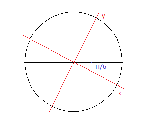
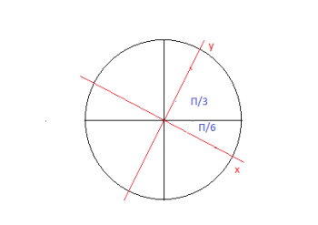
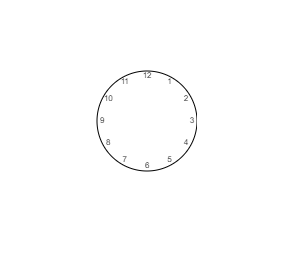

Dans le cours, nous avons créé une horloge pour illustrer la rotation couplée avec la translation. Comme vous l'aurez sûrement remarqué dans l'exemple, les chiffres suivent l'angle de rotation. Dans cet exercice, il va falloir remettre les chiffres dans le bon sens.
Rappel : nous avons effectué une translation au préalable qui a placé les coordonnées (0, 0) au centre du cercle.
Pour construire une horloge, chaque chiffre est positionné à un angle de 30 ° par rapport au chiffre précédent, soit П/6. On va donc effectuer une rotation de notre axe de 30 °.
Ensuite, nous allons effectuer une translation au croisement du cercle et de l'axe des y. En effet, nous allons devoir effectuer une rotation à partir de ce point pour rétablir l'angle d'écriture. Sinon cela donnera le rendu de l'exemple du cours : les chiffres suivront l'axe de rotation.
Pour connaître la position en y, il faut multiplier le rayon par l'angle, soit 50 x П/3. Comme nos coordonnées (0,0) correspondent au centre du cercle, la valeur de y sera négative (dans un canvas, les coordonnées positives de y descendent). Donc, pour connaître la position de y, il faut faire -50 x П/3.
Voici le code JavaScript de création du cercle. Complétez ce code pour obtenir le résultat ci-dessous :
See the Pen Untitled by OpenSpirit (@OpenSpirit) on CodePen.
Une fois que vous aurez écrit l'heure, n'oubliez pas de rétablir la rotation ainsi que la translation vers le centre du cercle avant de commencer une nouvelle rotation de l'axe.